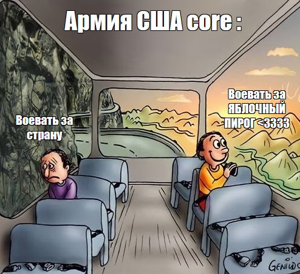

Чуть больше истории
Во время Первой и Второй мировых войн солдаты говорили журналистам, что сражаются «за маму и яблочный пирог».

Это стало мощным маркетинговым и патриотическим образом: домашний уют, тепло и семейные традиции.
Тот самый «Тарт Татен» (Ошибочный шедевр)
Нельзя забыть про французскую версию. В 1880-х годах сестры Татен в своем отеле случайно передержали яблоки в масле и сахаре. Чтобы спасти блюдо, они просто накрыли карамелизованные яблоки тестом сверху, запекли и перевернули. Так появился знаменитый пирог-перевертыш.
Сестры Татен

их легендарный пирог